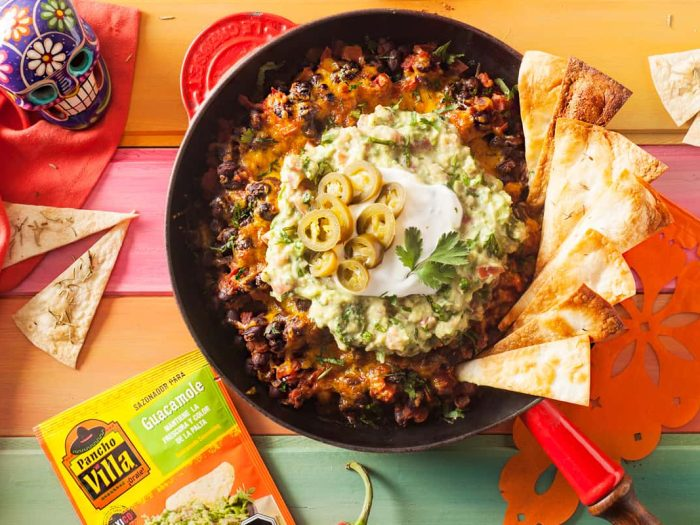

Black Bean Dip

Delicious mexican black bean dip with guacamole and chips.
This mexican dip is the perfect party appetizer.
Ingredients
- Dip
- Olive oil
- 1 red onion, diced
- 1 garlic clove, minced
- ½ tablespoon merkén
- 2 tablespoons tomato sauce
- 600g cooked black beans
- 200ml boiling water
- 1 tomato, diced
- 75g granulated cheese
- Guacamole
- 1 tomato, diced
- 1 avocado
- Juice of half a lemon
- 1 bunch, cilantro, chopped
- Salt and pepper
- To serve
- 4 Tablespoons sour cream
- 4 Tortillas XL
- Jalapeño pepper, thinly sliced
- Cilantro, chopped
Steps
- In a large skillet, heat 2 tbsp. olive oil and sauté the onion with garlic for 5 minutes or until onion is soft and translucent.
- Add the merkén, tomato sauce, black beans and water. Cook over low heat for15 minutes or until most of the liquid evaporates. Finally, add the tomato, cheddar cheese and cook until the cheese is melted. Reserve.
- In a separate bowl, mix all the guacamole ingredients. Reserve.
- Cut the tortillas into triangles and brush with olive oil on both sides. Arrange on a baking sheet and bake for 5 minutes, or until golden and crisp. Remove from oven and let cool completely.
- Transfer the bean dip to a container, arrange the guacamole and sour cream on top. Garnish with cilantro and jalapeno slices. Serve along with the crispy tortillas and lemon wedges.